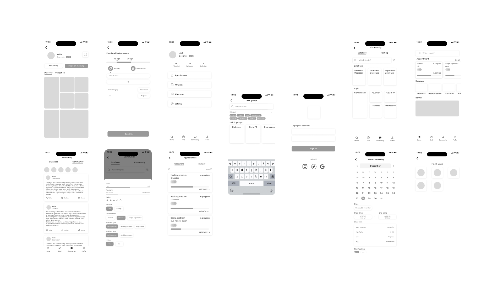
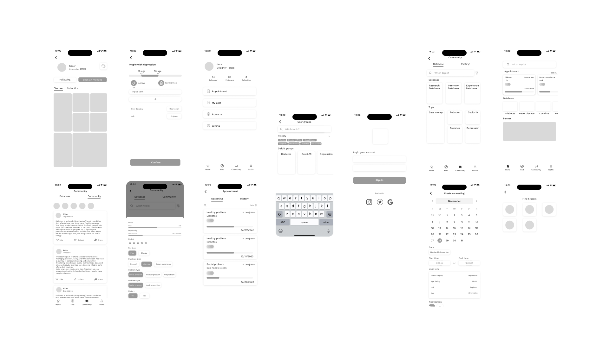

In order to better understand the designer pain points in
design
process, I
started to make
research about
that.
1. Designers are difficult find people to interview.
2. Students cannot find users test their products to get feedback and improve their design.
3. People wants a quiet space to communicate with users to interview and get feedback.
4. Many designers didn’t know how to ask question, it may let them if they are stranger.
5. Designers think ask strangers is bad efficient idea, so they want a straight way to find target users.
According to these research, I make design analysis.


 
